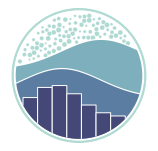
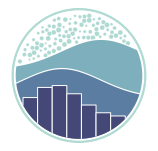

Sentiment Analysis
Python
Pt-br
NLP
Machine Learning
Data Cleaning
Exploratory
Predictive Modeling
Pre-Processing


 



Customer Sentiment Analysis
We will conduct a sentiment analysis on tweets using two datasets: one with 2.5 million records (df) and another with 100 manually labeled records (test). The goal is to prepare the data, perform preprocessing, build and validate a machine learning model for sentiment classification, apply it to the larger dataset to label the tweets, and finally analyze the results. The main objective of this project lies in natural language processing.